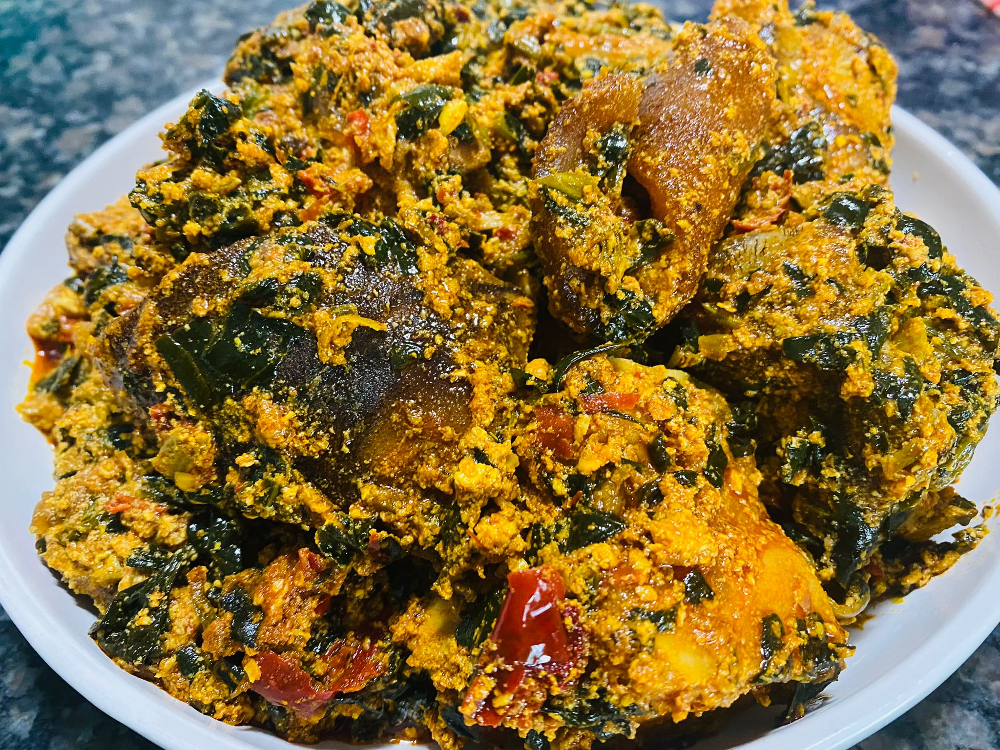
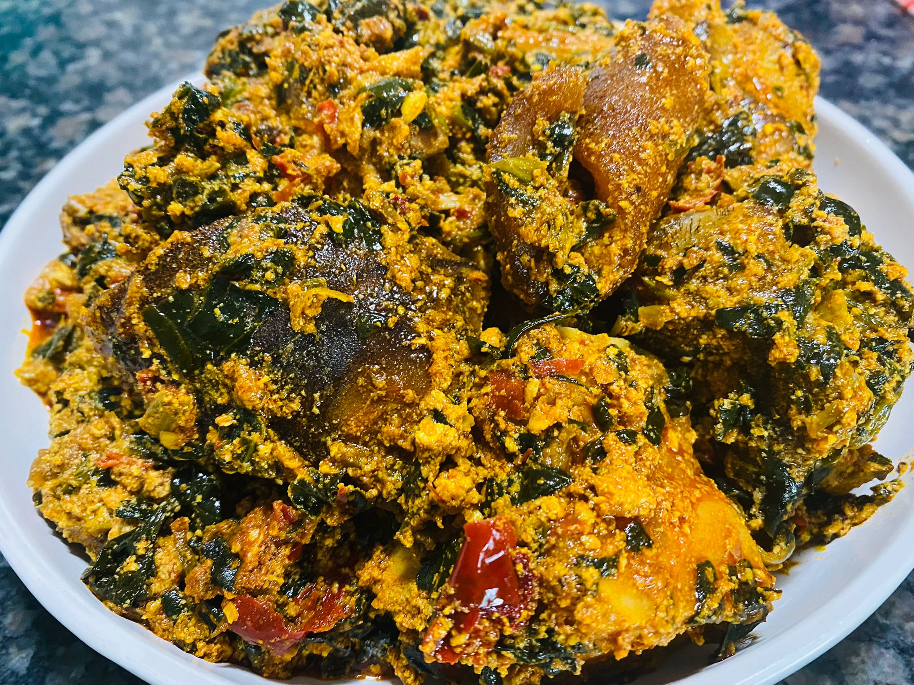

Equisi Soup
 

Step 2 (Boiling Method)
- Steam the protein with some seasonings
- Wash and slice (if necessary) your vegetables into a bowl.
- Pour your dried grinded melon seed into the boiling mixture and allow to cook for some minutes
- Pour a considerable amount of palm oil into the soup.
- Pour your protein stock into it, close lid and allow to simmer
for about 5 minutes.
- You can add more ingredients at this point if needed
- Pour the vegetables, allow to cook in low heat for about 2 minutes. Your delicious meal is ready!
- You can eat with your favourite swallow or even rice.